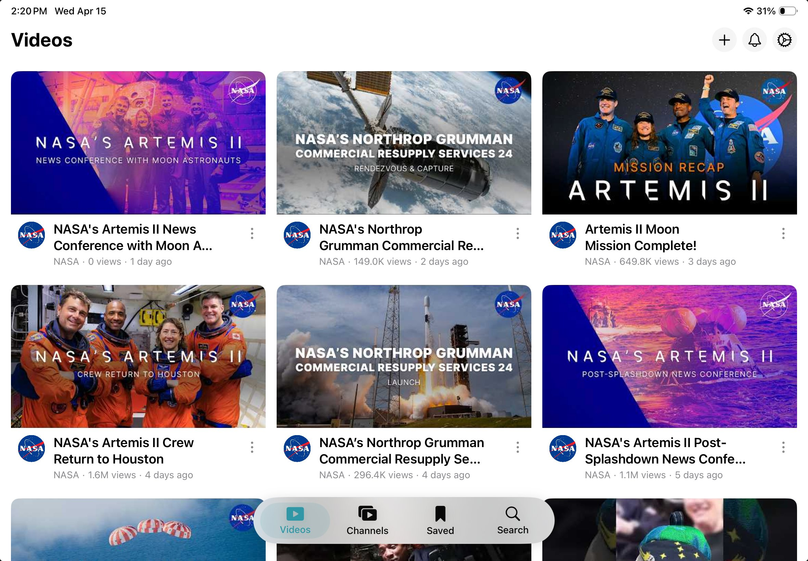

Videos, on your terms.
Add only the channels you love. No algorithm, no recommendations, no surprises. Just focus.


Screen time
31 min left today
Only the videos
and channels you add
and channels you add
Passcode protected